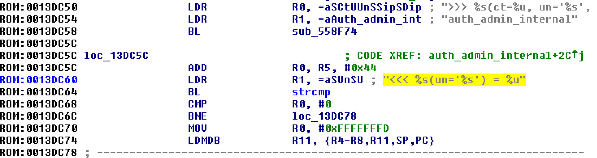

A Tour of Cryptographic Backdoors
Shaanan Cohney
17/07/2017

Abstract
To many cryptographers it's evident that we're in the midst of the next battle of the 'crypto wars'. Governments, including Australia's, are increasingly pushing for legislation to mandate cryptographic backdoors to allow them to decrypt communications in the interest of national security.
We present an overview of the history, technical challenges and spy-novel worthy intrigues of the past two decades and a look at what's changed between now and then. We present case studies on the feasibility of exploiting front and backdoors in RSA and Diffie-Hellman, the two most commonly used key exchange algorithms, in light of increased access to computation.
Slides available on request
Primary Works Cited
* Indicates contribution by Shaanan
- Measuring small subgroup attacks against Diffie-Hellman* NDSS Symposium (2016)
- DROWN: Breaking TLS using SSLv2 USENIX Security (2016)* Finalist Internet Defense Prize
- A Systematic Analysis of the Juniper Dual EC Incident - ACM CCS (2016)* Best Paper Award
- Factoring As A Service - Financial Cryptography (2016)*
- Going Bright: Wiretapping without Weakening Communications Infrastructure - IEEE Security & Privacy (2013)
- Keys Under Doormats: Mandating insecurity by requiring government access to all data and communications - Communications of the ACM (2015)
- Imperfect Forward Secrecy: How Diffie-Hellman Fails in Practice - ACM CCS (2015)
- A Messy State of the Union: Taming the Composite State Machines of TLS - IEEE S&P (2015)
- A kilobit hidden SNFS discrete logarithm computation - Eurocrypt (2017)